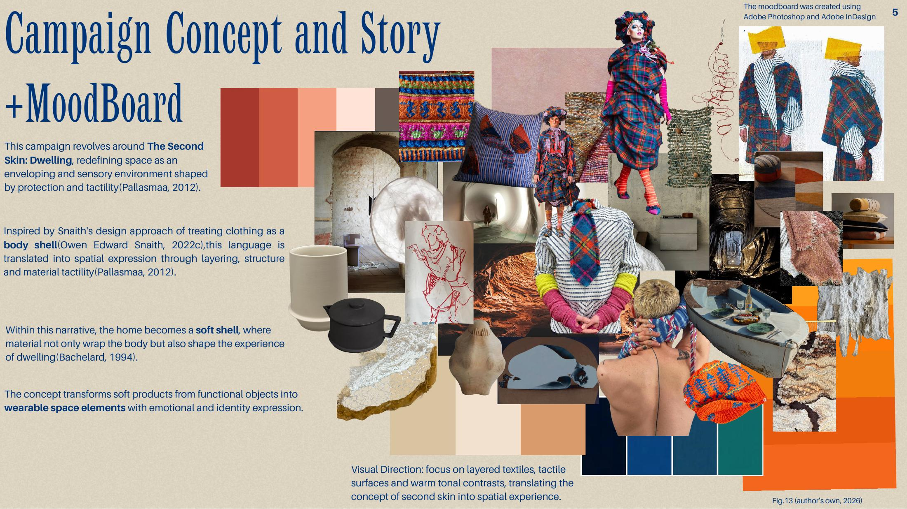
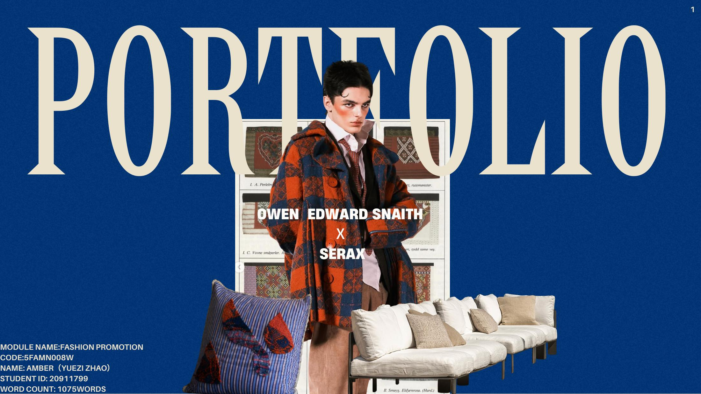
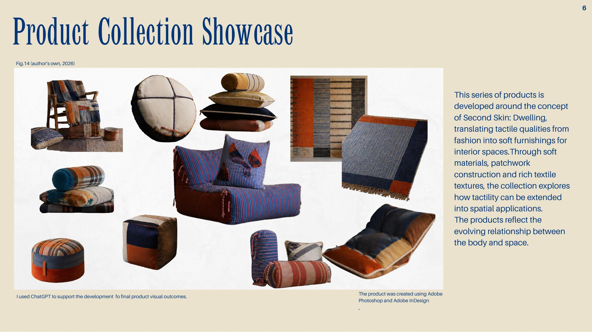
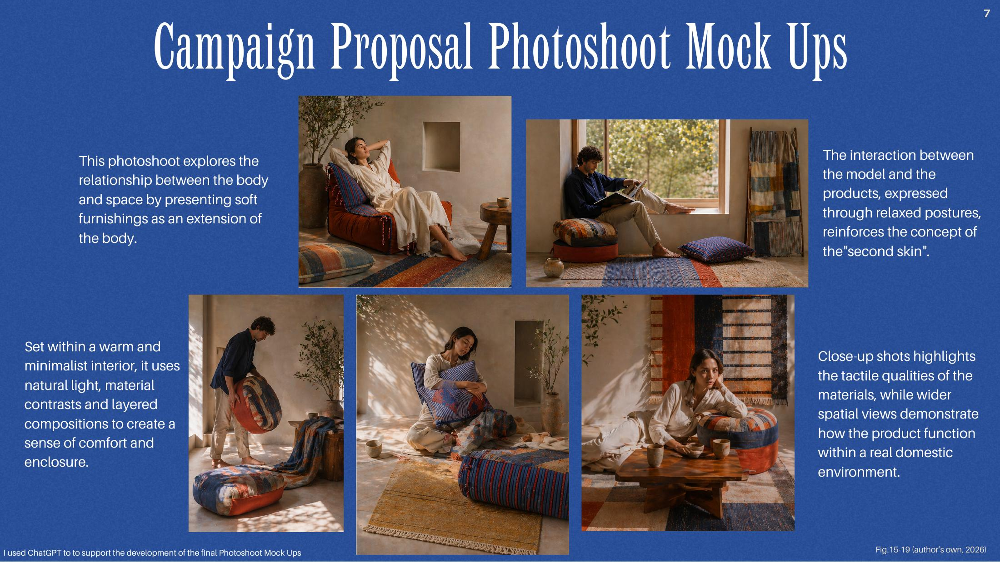
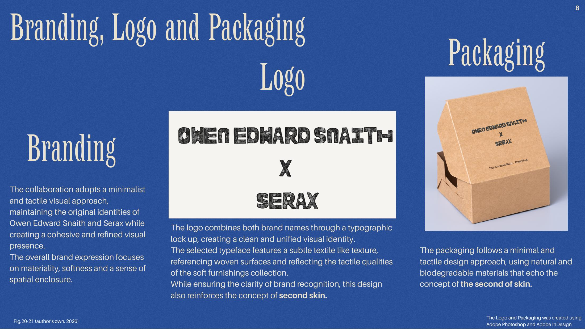
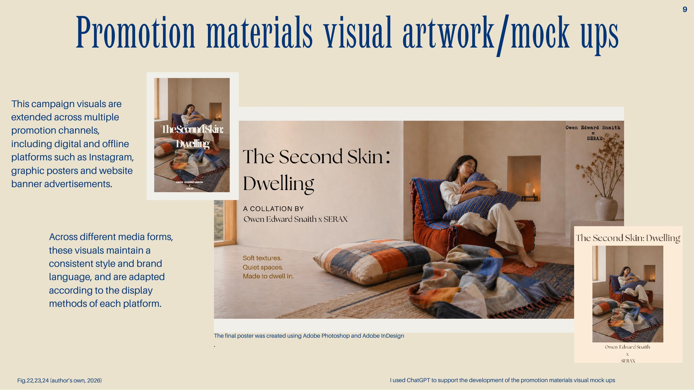
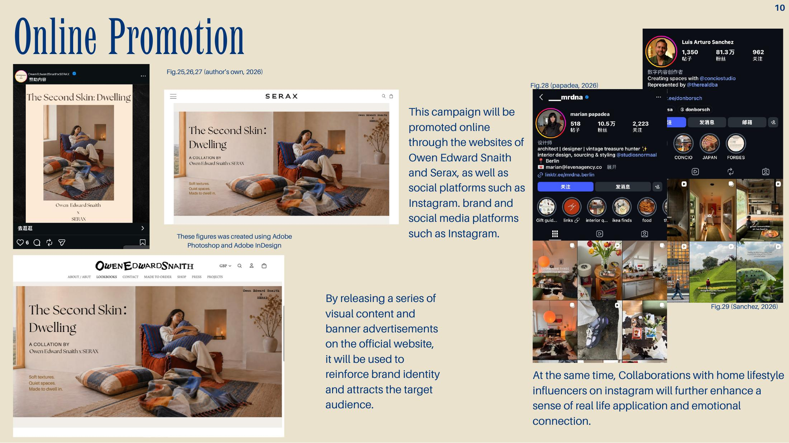
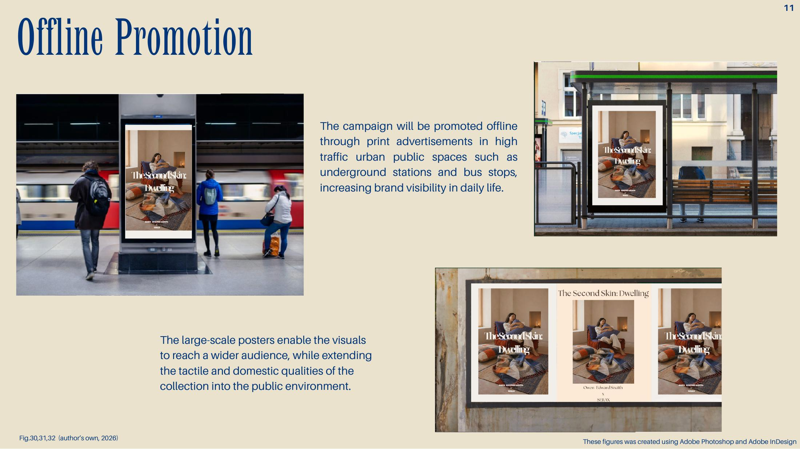
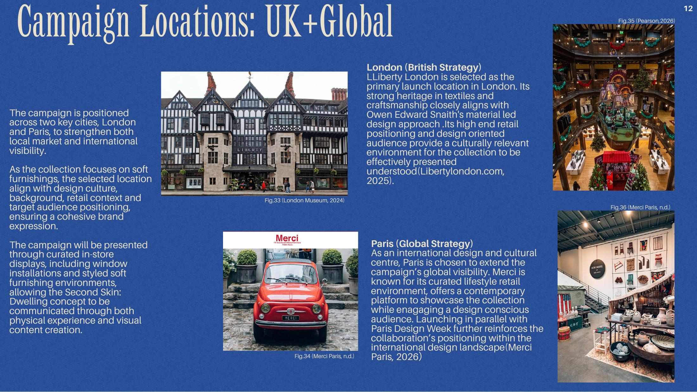

01
Campaign Concept
The Second Skin: Dwelling

Selected work · 2026

Portfolio
One campaign, five visual chapters.
The Second Skin: Dwelling

Soft furnishings as spatial skin

Body, object and domestic space

Identity, logo and packaging

Online and offline promotion

Project story
The Second Skin: Dwelling is a proposed collaboration between British designer Owen Edward Snaith and Belgian design brand Serax. It translates Snaith’s tactile, protective textile language from the body into the interior.
Layered fabrics, sculptural forms and warm tonal contrasts turn soft furnishings into objects with emotional weight—where fashion, identity and the experience of home meet.



London + Paris
A dual-city launch connects Liberty London’s textile heritage with Merci Paris’s contemporary design audience, extending the campaign through retail installations, social content and city-scale media.
About
Based between fashion, interiors and visual culture.
Open to collaborations, internships and creative projects.